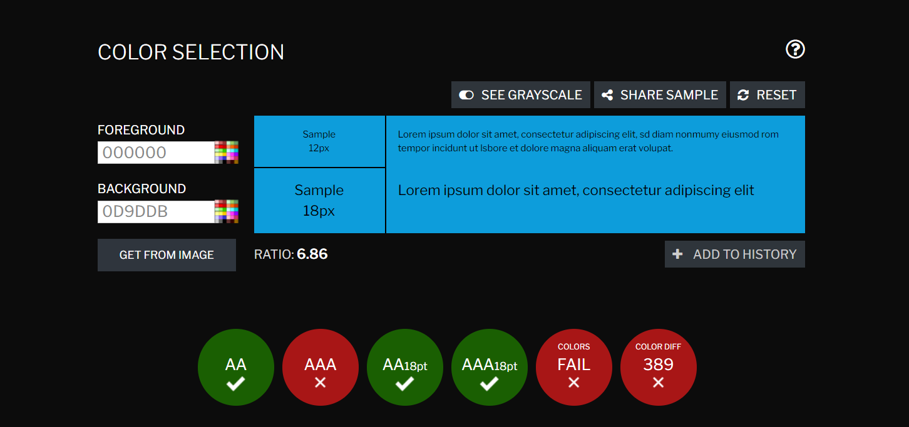
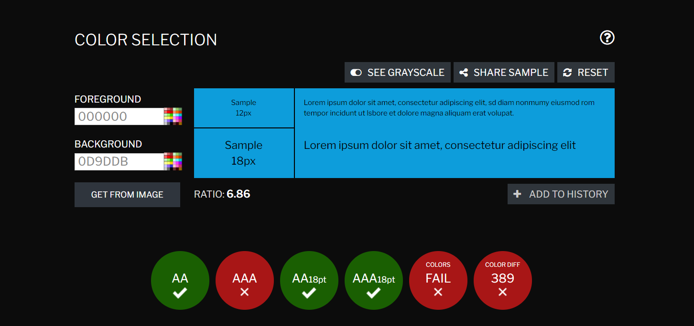

| Vecka | På lektionen | Utanför lektionen |
|---|---|---|
| 49 | Se till att mina "Nyheter" är klara med lite utbud och även att fylla ut sidan lite mer, alltså se till vad som ska vara under nyheter och öppettider. | |
| 50 | Påbörja de övriga två sidor å göra klart minst två. | Se till att index sidan e helt klar tills lektionen. |
| 51 | Att bli tillsmestadels klar med meny sidan. Om det passar så vill jag även testa med fler webbläsare och validera på html och css | Göra klart boka bord sidan |
 
